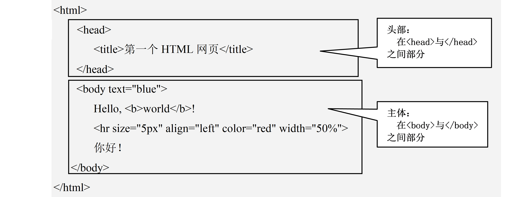

1. HTML简介2. html文档的结构3. HTML基本语法结构 3.1 <标记名称 属性名1="属性值" 属性名2="属性值" ….. >3.2 HTML注释3.3 HTML标签3.3 说明3.3.1 字符编码3.3.2 关键字3.3.3 定时自动刷新3.3.4 定时自动跳转4. 文本与段落标记5. 列表标签5.1 有序列表标记：<ol></ol>5.2 无序列表标记：<ul></ul>6. 超链接标签 hyper link6.1 绝对链接6.3 锚点6.4 热点链接（少见）6.5 URL (Uniform Resource Locator)7. 图片标签8. 表格标签8.1 基本语法：8.2 表格属性（<table>、<td>、<th>属性）
HTML文档通常以.html或.htm为文件扩展名，能独立于各种操作系统平台的、可供浏览器解释浏览的网页文件
 默认，html内容与运行结果并不一致，是把HTML中元素按“流”式布局（从左到向，从上向下地挤着排列） 注：如水平线
等默认宽度是100% （占满父级容器） 一些常用的属性设置： Size大小，可像素，也可百分比 Width 宽度，可像素，可百分比 Color 颜色 ，可常用音调，也可人为调配 如：color="#aa00cc" 表示一种淡紫色 #RRGGBB 是一种颜色描述，是24位真彩色，十六制的，RR是红，GG绿，BB蓝，分别介于00--FF
HTML文档一般包含：头部区域和主体区域。 基本结构由3个标签来组织：<html>、<head>和<body>。
例如： 标记<hr/>的作用是在网页中插入一条水平线，但是，要绘制什么类型（线的粗细、颜色等）的直线呢？对直线的粗细、颜色的限制，就需要标记的属性。 <hr size="5px" align="center" color="blue" width="80%“/> 其中：align为属性，center为属性值（表示居中）；color为颜色属性，其属性值为blue（蓝色）；size为字体大小属性，其属性值为5px。
<!-- 注释内容 --> //注释信息会被浏览器忽略
| 标签 | 描述 |
|---|---|
| <head> | 定义了文档的信息 |
| <title> | 定义了文档的标题 |
| <base> | 定义了页面链接标签的默认基准链接地址 |
| <meta> | 定义了HTML文档中的元数据 |
| <link> | 定义了一个文档和外部资源之间的关系 |
| <style> | 定义了HTML文档的样式文件 |
| <script> | 定义了客户端的脚本文件 |
<meta/>标记用于定义页面的元信息，元信息不显示在页面中，主要用于告诉浏览器文档的字符编码、关键字、描述信息和自动刷新与调整，等等。可重复出现在<head>头部标记中。
xxxxxxxxxx`<meta charset="utf-8">`
基本语法：
<meta name= "keywords" content= "HTML, CSS, Javascript" />
"keywords" 是一个经常被用到的名称。它为文档定义了一组关键字。某些搜索引擎在遇到这些关键字时，会用这些关键字对文档进行分类。
基本语法：
<meta http-equiv="refresh" content="1" />
该语句表示，页面每隔一秒刷新一次，其中属性content的值，代表间隔的时间。
基本语法：
xxxxxxxxxx <meta http-equiv="refresh" content="3;url=http://www.sohu.com" />该语句表示，页面3秒后自动转到搜狐主页。 注意：上述标签一般放在head标签中。 注：url ---union resource locator 统一资源定位，就是日常说的网址。
| 标记 | 说明 |
|---|---|
<h#></h#> | 标题标记，#=1,2,3,4,5,6，定义了6级标题，每级标题的字体大小依次递减，属性align设定对齐方式：left、right、center |
<b></b> | 黑体标记 |
<i></i> | 斜体标记 |
<strong></strong> | 加重文本标记（通常是斜体加黑体） |
<font></font> | 字体标记：size属性，设置字体大小，取值从1到7,color属性，设计字体颜色，使用名字常量或RGB的十六进制值，face属性，设计字体字型，例如“宋体”、“楷体”等不建议继续使用，而使用CSS样式来代替 |
<p></p> | 段落标记：属性align指定对齐方式。 |
<hr/> | 水平分隔线标记：属性width设置线的长度（单位像素），size设置线的粗细（单位像素）,color设置线的颜色,align设置对齐方式，<hr>也可以 |
<br/> | 插入一个回车换行符，<br>也可以 |
<sup>和<sub> | 上、下标，均为双标签 |
注意：注： <hx>标题标签是以行为单位，不会让多个标题议定显示在一行上------行式布局对象
列表标签分两类：有序标签和无序标签。
<ol></ol>格式：
xxxxxxxxxx<ol type="序号类型"> <li>…….</li> <li>……</li> …………..</ol>其中，属性type指定列表项前的项目编号的样式，其取值：
“1”：编号为阿拉伯数字（默认值）；
“a”：小写英文字母；
“A”：大写英文字母；
“i”：小写罗马数字；
“I”：为大写罗马数字。
<ul></ul>格式：
xxxxxxxxxx<ul type="类型样式"> <li>…….</li> <li>……</li> …………..</ul>其中，属性tpye指定列表项前的项目符号的样式，其取值为 disc：实心圆点（默认值）； circle：空心圆点； square：实心方块。
网页中的信息节点：一个网页中的各元素呈一个树形结构，每个元素最多有一个父节点，容器类的节点可能有子节点。 超链接是指从一个网页的信息节点（如一个词语、一段文字、或一张图片）指向另一个目标的连接关系，这些目标可以是另一个网页、一个资源文件，或者是网页内的某个元素。
打开链接时，如果目标是一个浏览器无法直接展示内容的对象，就转为“下载”，如目标是一个rar压缩文件，打开链接时下载该文件。
通过超链接可以实现从一个页面到另一个页面，或从一个页面内的某一部分到另一部分的跳转。因此，超链接是整个万维网应用的核心和基础。有了链接，可把全世界的信息相互网状地联系起来。 链接分类：
从一个网站的某页面跳转到另一个不同网站上去（站外链接），目标URL就是一个完整的地址，如： 协议://服务类型.域名/被访问的资源路径和文件名（http://www.perking.edu.cn/1/news.html） 补：如果一个URL没有指定要访问的文件资源参数，则表示打开该网站的默认的主页（homepage）,## 6.2 相对链接：从本网站的某页跳转到本网站的其它页（站网链接）,目标URL是一个相对或绝对路径的文件描述，如，当前网页是 webapp/1/1.html，其中一个链接要跳到webapp/2/2.html ，则目标URL: ../2/2.html (相对) 也可写成： /2/2.html （根绝对）如果一个URL最左边是/，它表示是网站的根文件夹，本处代表根文件夹webapp
从当前网页的一个位置跳转到本网页的其它位置（如点击页前面的目录节，跳到文章的内容位置），适合于内容特别多的网页，实现内部位置跳转（也可以对文章内的参考引用说明跳转） 如：
<a name="页首"></a>
......
<a href="#页首">点击到首</a>
在一个图片中，给某个小区域指定一个链接（如点击一张旅游图上不同位置，可跳转到对应的文字介绍网页上）
格式：
<a href="url" target="目标窗口弹出方式">超链接文本或图片</a>
target属性：指定链接页面的打开方式，取值包括self、new、blank、parent、_top，等等
href属性：指定链接目标的url地址，设置href后a元素才具备超链接功能。如果值为#表示一个空链接
例如：<a href= "http://www.baidu.com" >找度娘</a>
统一资源定位器，通俗讲就是网络资源的位置或路径。
<a href= " http://www.perking.edu.cn/images/name.jpg " >LOGO</a>相对路径：通常以当前HTML或CSS文档为起点，通过层级关系描述目标资源的位置，主要用于链接当前站点内的文档。
注：针对一张图片也可以是建立链接： 小例：
xxxxxxxxxx<a href="./MyResource/名单.zip">下载压缩包</a><br><a href="MyResource/Word素材.docx">下载word文档</a><a href="http://www.baidu.com"><img src="image/baidu.png"></a>再次对相对链接下的资源文件名路径说明： 例如：
1.“/”代表根目录，比如html文档在C盘，那么“/name.jpg”就代表name.jpg应在C盘根目录下 如果是在网站中eclipse管理下，URL中的 / 开头表示本网站的webapp文件夹，网站的根。
- “./”代表当前目录，此时如果name.jpg与当前html页面在同一目录下，那么 “./name.jpg”与“name.jpg”等价，因此，"./"可不写 3.“../”代表上一级目录，如果设置href="../name.jpg"，那么浏览器就到当前页面的上一级目录中寻找name.jpg. ../../ 上一级的上一级
除了网页之间的链接，还可以在页内实现部分与部分之间的跳转 例如，在一个超长页面的底部设置一个锚点，然后在页面顶部超链接处设置href属性为"#锚点名称"，当鼠标单击该超链接时，跳转到页面底部（底部在可见窗口区域内）。
xxxxxxxxxx<a href= "#btm" >跳转到页面底部</head> …………… …………… ……………<a name= "btm" >底部锚点位置</span><!-- 锚点设置name和id属性均可 --><a id= "btm" >底部锚点位置</span><!-- 说明：在html中对一个元素取名时，可用id,也可以name。同一个网页中可以有多个name相同的元素，但不同元素的id必须是唯一的。 从前台向后台请求传输数据时，会多个name相同的元素组成一个数组，反而方便得多 -->
<!-- 超链接伪协议例如： --><a href="tel:110">请电话联系警察叔叔</a><a href="sms:110">请短信联系警察叔叔</a><a href="mailto:110@sina.com">请Email联系警察叔叔</a><!-- 点击时，用户可选一种邮件处理软件，如outlook press , foxmail等，直接发送邮件 --><a href="mailto:121212@qq.com"> 有问题请联系我</a>格式：
<img src="url" height="" width ="">
其中：
属性src：指定图像源的URL路径
alt：替代文本；
height：图片的高度；
width：图片的宽度。
如果不指定宽高，则原图片是多大就显示多大。小技巧，一般只指定宽或高之一，另一个参数自动适应，等比缩放让图片不变形。
网络中常用的图形类型：jpg(jpeg) , gif, png
图片超链接：
xxxxxxxxxx<a href="http://www.xhu.edu.cn"> <img src="images/bajiao.png" width="60" alt="第八教学楼"/></a> 表格由行、列、单元格组成，一般表格由<table>、<tr>、<th>和<td>标记来定义的，分别表示表格、表格行、表头单元格、单元格。也可使用<caption>设置表格标题，使用<tbody>包裹除表头之外的单元格数据区域，便于使用JS脚本语言动态增删表格数据。
xxxxxxxxxx<table> <caption>表格标题</caption> <tr><th>列名一</th><th>列名二</th>…...</tr> <tbody> <tr><td>数据一</td><td>数据二</td>…...</tr> …… </tbody></table>表格由行、列、单元格组成，一般表格由<table>、<tr>、<th>和<td>标记来定义的，分别表示表格、表格行、表头单元格、单元格。也可使用<caption>设置表格标题，使用<tbody>表体标签包裹除表头之外的单元格数据区域，便于使用JS脚本语言动态增删表格数据。
注：属性值在Dreamweaver CS6中通过代码提示，或可视化界面中选择 <td>单元格专有属性：colspan（跨列列数）、rowspan（跨行行数）-用于单元格跨行跨列合并